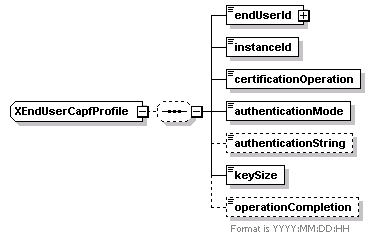
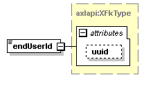
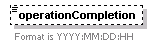

| diagram |  | ||
| namespace | http://www.cisco.com/AXL/API/10.5 | ||
| children | endUserId instanceId certificationOperation authenticationMode authenticationString keySize operationCompletion | ||
| used by |
|
||
| source | <xsd:complexType name="XEndUserCapfProfile"> <xsd:sequence minOccurs="0"> <xsd:element name="endUserId" type="axlapi:XFkType" nillable="false" minOccurs="1" maxOccurs="1"/> <xsd:element name="instanceId" type="xsd:string" nillable="false" minOccurs="1" maxOccurs="1"/> <xsd:element name="certificationOperation" type="axlapi:XCertificateOperation" default="No Pending Operation" nillable="false" minOccurs="1" maxOccurs="1"/> <xsd:element name="authenticationMode" type="axlapi:XAuthenticationMode" default="By Null String" nillable="false" minOccurs="1" maxOccurs="1"/> <xsd:element name="authenticationString" type="xsd:string" nillable="false" minOccurs="0" maxOccurs="1"/> <xsd:element name="keySize" type="axlapi:XKeySize" default="1024" nillable="false" minOccurs="1" maxOccurs="1"/> <xsd:element name="operationCompletion" type="xsd:string" nillable="false" minOccurs="0" maxOccurs="1"> <xsd:annotation> <xsd:documentation>Format is YYYY:MM:DD:HH</xsd:documentation> </xsd:annotation> </xsd:element> </xsd:sequence> </xsd:complexType> |
element XEndUserCapfProfile/endUserId
| diagram |  | ||||||||||||
| type | axlapi:XFkType | ||||||||||||
| properties |
|
||||||||||||
| attributes |
|
||||||||||||
| source | <xsd:element name="endUserId" type="axlapi:XFkType" nillable="false" minOccurs="1" maxOccurs="1"/> |
element XEndUserCapfProfile/instanceId
| diagram | |||||
| type | xsd:string | ||||
| properties |
|
||||
| source | <xsd:element name="instanceId" type="xsd:string" nillable="false" minOccurs="1" maxOccurs="1"/> |
element XEndUserCapfProfile/certificationOperation
| diagram |  |
||||||
| type | axlapi:XCertificateOperation | ||||||
| properties |
|
||||||
| source | <xsd:element name="certificationOperation" type="axlapi:XCertificateOperation" default="No Pending Operation" nillable="false" minOccurs="1" maxOccurs="1"/> |
element XEndUserCapfProfile/authenticationMode
| diagram | |||||||
| type | axlapi:XAuthenticationMode | ||||||
| properties |
|
||||||
| source | <xsd:element name="authenticationMode" type="axlapi:XAuthenticationMode" default="By Null String" nillable="false" minOccurs="1" maxOccurs="1"/> |
element XEndUserCapfProfile/authenticationString
| diagram | |||||||||
| type | xsd:string | ||||||||
| properties |
|
||||||||
| source | <xsd:element name="authenticationString" type="xsd:string" nillable="false" minOccurs="0" maxOccurs="1"/> |
element XEndUserCapfProfile/keySize
| diagram | |||||||
| type | axlapi:XKeySize | ||||||
| properties |
|
||||||
| source | <xsd:element name="keySize" type="axlapi:XKeySize" default="1024" nillable="false" minOccurs="1" maxOccurs="1"/> |
element XEndUserCapfProfile/operationCompletion
| diagram |  | ||||||||
| type | xsd:string | ||||||||
| properties |
|
||||||||
| annotation |
|
||||||||
| source | <xsd:element name="operationCompletion" type="xsd:string" nillable="false" minOccurs="0" maxOccurs="1"> <xsd:annotation> <xsd:documentation>Format is YYYY:MM:DD:HH</xsd:documentation> </xsd:annotation> </xsd:element> |
XML Schema documentation generated by XMLSpy Schema Editor http://www.altova.com/xmlspy